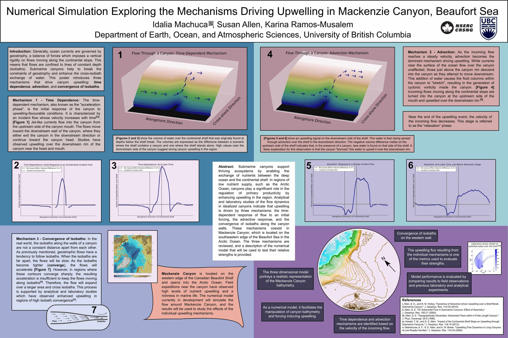

About Me
Research Projects
Submarine Canyons
Salish Sea
Science Communication
Conference Presentations
Department Magazine
Instructional Skills Workshop
Three Minute Thesis (3MT)
T.A. Belize with Oceana
Blog
Contact
IDALIA A. MACHUCA
About Me
Research Projects
Submarine Canyons
Salish Sea
Science Communication
Conference Presentations
Department Magazine
Instructional Skills Workshop
Three Minute Thesis (3MT)
T.A. Belize with Oceana
Blog
Contact
Conference Presentations

Presentations at Scientific Conferences
Effects of a Dynamically Wide Submarine Canyon on Coastal Currents During an Upwelling Event:
Ocean Sciences Meeting 2018 (Portland, Oregon)
Characterization of the Flow Dynaimcs in a Wide, Arctic Canyon:
Canadian Meteorological and Oceanographic Society’s (CMOS) Congress 2017 (Toronto, Ontario)
Numerical Simulation Exploring the Mechanisms Driving Upwelling in Mackenzie Canyon, Beaufort Sea:
INCISE International Submarine Canyon Symposium 2016 (Victoria, British Columbia)
Communicating Storm Surge Predictions in the Strait of Georgia:
Mobilizing Science Knowledge and Research (KMB) Symposium 2015 (Halifax, Nova Scotia)